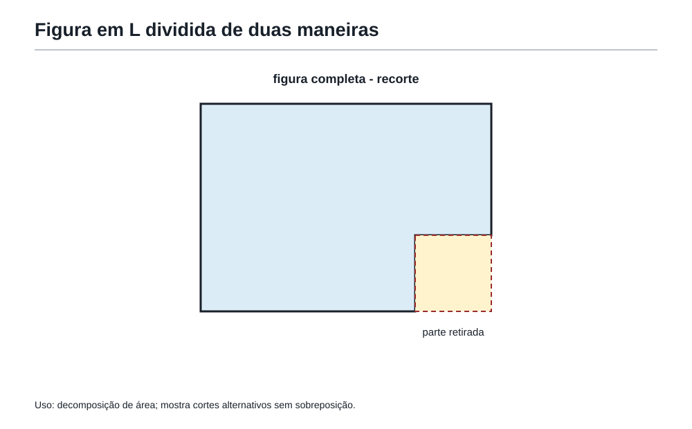
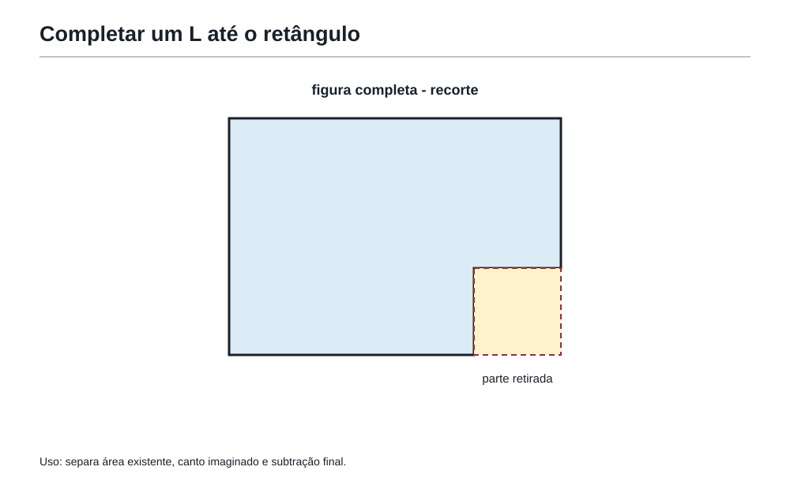
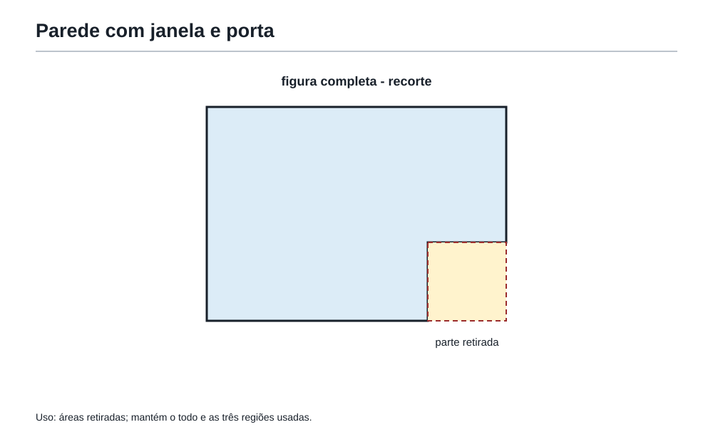
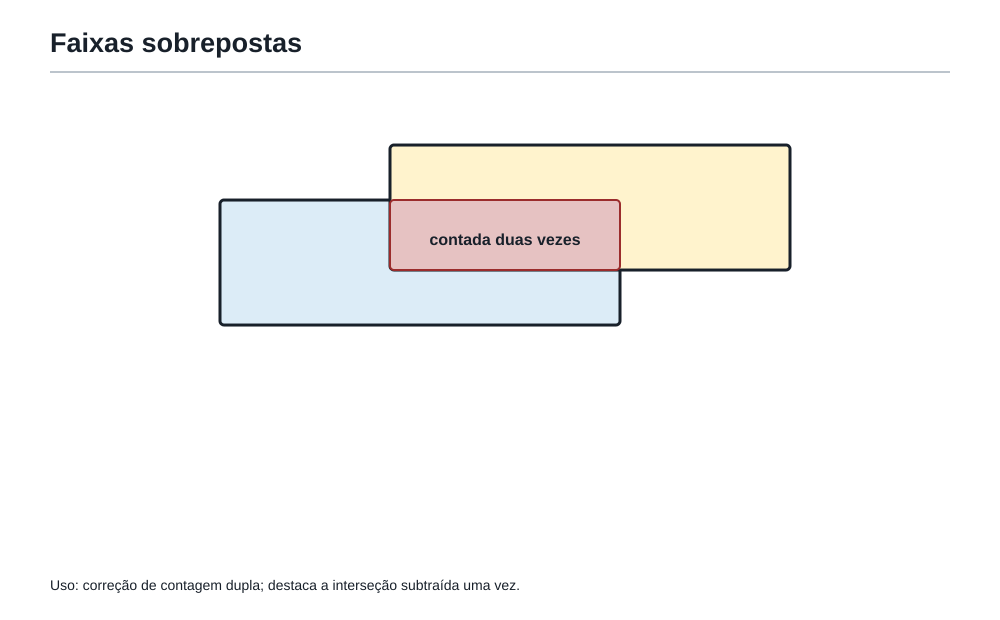
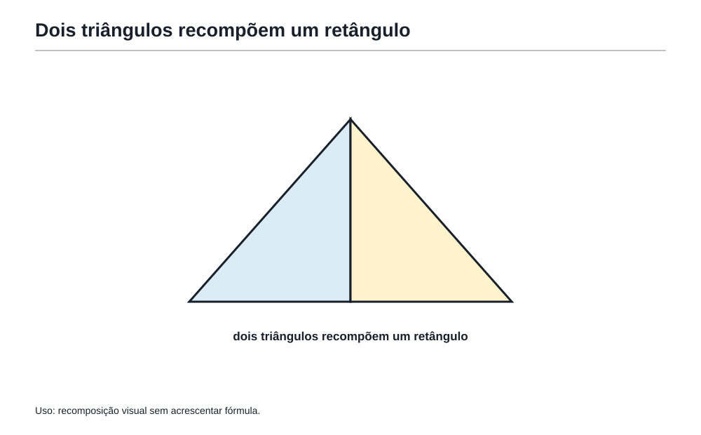
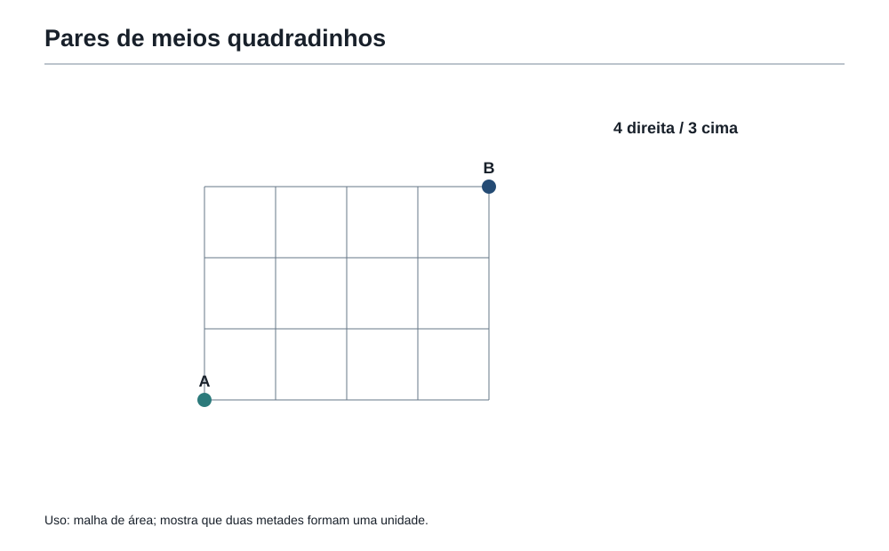

A arte de montar e desmontar figuras
1. Depois das bordas e das áreas
Na sala anterior da Academia do Raciocínio, Felipe aprendeu uma diferença que parece simples, mas muda muita coisa:
- perímetro é o passeio pela borda;
- área é o espaço ocupado por dentro.
Essa diferença abriu uma porta.
Do outro lado dela, não havia apenas quadrados e retângulos organizados. Havia figuras recortadas, pedaços colados, janelas, buracos, regiões sombreadas, triângulos escondidos e formas que pareciam não caber em fórmula nenhuma.
Felipe olhou para o chão da nova sala e viu um desenho estranho. Não era retângulo. Não era triângulo. Não era quadrado. Parecia uma peça de quebra-cabeça.
O Professor da Academia perguntou:
— Você acha que essa figura é difícil porque ela é impossível ou porque ainda não foi transformada?
Felipe não respondeu de imediato.
A coruja, pousada sobre uma régua, completou:
— Muitas figuras difíceis são apenas figuras simples usando disfarce.
Neste capítulo, a missão é aprender a tirar esse disfarce.
2. Quando uma figura não vem pronta
Algumas figuras aparecem prontas para calcular.
Um retângulo de 8 cm por 5 cm tem área:
8 × 5 = 40 cm²
Um quadrado de lado 6 cm tem área:
6 × 6 = 36 cm²
Mas problemas olímpicos raramente entregam tudo tão arrumado.
Eles podem mostrar uma figura em L, uma moldura, uma parede com janela, uma peça recortada, uma região sombreada ou uma malha cheia de partes.
Nesses casos, a pergunta não é:
Qual fórmula eu decorei?
A pergunta melhor é:
Em que figuras mais simples esta figura pode se transformar?
Essa mudança é a chave.
Quando uma figura não vem pronta, o matemático não briga com ela. Ele procura uma transformação.
3. Figura composta: uma figura feita de ideias menores
Uma figura composta é uma figura formada por pedaços de figuras que você já conhece.
Ela pode ser feita de:
- retângulos;
- quadrados;
- triângulos;
- metades de retângulos;
- partes retiradas;
- partes sobrepostas;
- pedaços que podem ser reorganizados.
O nome vem depois. A ideia vem antes.
Uma figura composta não precisa ser calculada de uma vez. Ela pode ser estudada por partes.
Imagine uma sala em forma de L.
Ela não é um retângulo completo. Mas talvez seja formada por dois retângulos menores. Ou talvez seja um retângulo grande com um pedaço faltando.
Essas duas leituras podem estar certas ao mesmo tempo.
A matemática olímpica gosta disso: mais de um caminho correto para a mesma resposta.
4. A pergunta escondida continua mandando
Antes de montar ou desmontar qualquer figura, a Academia exige uma pergunta:
O problema quer área ou perímetro?
Isso é importante porque uma mesma figura pode pedir estratégias diferentes.
Para área, muitas vezes você pode:
- dividir a figura em partes;
- completar até formar uma figura maior;
- subtrair buracos;
- recompor pedaços;
- usar metades de retângulos.
Para perímetro, o cuidado muda:
- o que conta é a borda externa;
- lados internos não entram;
- lados colados desaparecem do contorno;
- completar uma figura pode criar bordas que não existiam.
Veja a armadilha:
Se uma figura em L é completada até virar retângulo, esse completamento pode ajudar a calcular a área. Mas, se o problema pede perímetro, não basta calcular o perímetro do retângulo maior.
A figura não mudou de contorno só porque você imaginou um pedaço faltando.
A primeira pergunta da sala é sempre:
Estou medindo o espaço de dentro ou o passeio pela borda?
5. Quatro estratégias para não se perder
A nova sala da Academia tinha quatro portas, cada uma com uma palavra gravada:
- Dividir.
- Completar.
- Subtrair.
- Recompor.
O Professor explicou:
— Quando a figura parece complicada, escolha uma dessas portas. Não tente enxergar tudo ao mesmo tempo.
A coruja acrescentou:
— Figura difícil não pede pressa. Pede transformação.
Essas quatro estratégias são o centro deste capítulo.
6. Estratégia 1: dividir
Dividir é transformar uma figura composta em pedaços simples.
Suponha uma figura em L formada por dois retângulos:
- um retângulo de 8 cm por 3 cm;
- outro retângulo de 4 cm por 5 cm.
Se esses dois pedaços não se sobrepõem, a área total é a soma das áreas:
8 × 3 = 24
4 × 5 = 20
24 + 20 = 44
A área da figura é 44 cm².
A ideia não foi decorar uma fórmula para figura em L. A ideia foi enxergar retângulos escondidos.
Essa estratégia funciona quando você consegue cortar a figura em pedaços que não se sobrepõem e que cobrem toda a região desejada.
A pergunta de controle é:
Meus pedaços cobrem tudo sem deixar buraco e sem passar duas vezes pelo mesmo lugar?
Se a resposta for sim, você pode somar as áreas.
7. Dividir de mais de um jeito

Uma mesma figura pode ser dividida de várias maneiras.
Imagine um L dentro de uma malha quadriculada. Você pode cortar na vertical e formar dois retângulos. Ou pode cortar na horizontal e formar outros dois retângulos.
Os pedaços mudam, mas a área total deve ser a mesma.
Isso é bom.
Quando dois caminhos diferentes chegam à mesma resposta, eles ajudam a conferir o raciocínio.
Felipe perguntou:
— Então existe um jeito certo?
O Professor respondeu:
— Existe jeito correto. Nem sempre existe um único jeito.
Na OBMEP, isso é muito importante. Uma solução pode ser diferente da solução oficial e ainda estar certa, desde que seja clara, rigorosa e completa.
A Academia não quer que você memorize cortes. Ela quer que você aprenda a escolher cortes úteis.
8. Estratégia 2: completar

Às vezes, em vez de dividir a figura, é mais fácil completar o que falta.
Imagine um retângulo grande de 10 cm por 6 cm. No canto dele falta um retângulo pequeno de 3 cm por 2 cm.
A figura restante tem forma de L.
Você poderia dividir essa figura em dois retângulos. Mas também pode pensar assim:
área do retângulo grande = 10 × 6 = 60
área do pedaço faltando = 3 × 2 = 6
área da figura = 60 - 6 = 54
A área é 54 cm².
Aqui, completar não significa colar um pedaço de verdade. Significa imaginar a figura como parte de uma figura maior simples.
A pergunta de controle é:
Que figura simples aparece se eu completar o que falta?
Completar é útil para:
- figuras em L;
- cantos retirados;
- regiões sombreadas dentro de retângulos;
- figuras quase retangulares;
- molduras.
Mas cuidado: se completar ajuda a calcular área, você precisa subtrair o pedaço que inventou.
Não se esqueça de devolver a figura ao que ela era.
9. Estratégia 3: subtrair buracos e partes faltantes

Algumas figuras são mais fáceis de entender como um todo com partes retiradas.
Uma parede retangular com uma janela não precisa ser dividida em vários pedaços ao redor da janela.
Se a parede mede 8 m por 5 m e a janela mede 2 m por 3 m, a área que pode ser pintada é:
parede inteira: 8 × 5 = 40
janela: 2 × 3 = 6
parte pintada: 40 - 6 = 34
A resposta é 34 m².
O mesmo vale para:
- piscina dentro de um terreno;
- canteiro dentro de uma praça;
- buraco no meio de uma placa;
- região não sombreada dentro de uma figura;
- moldura em volta de uma foto.
A ideia é simples:
Calcule o todo. Depois retire o que não pertence à pergunta.
Mas a pergunta escondida ainda manda.
Se o problema pede a área da moldura, você subtrai o espaço interno. Se pede a área total da placa, talvez não subtraia nada. Se pede o contorno da moldura, o problema é de perímetro, e a estratégia muda.
10. Estratégia 4: recompor
Recompor é mudar a posição dos pedaços sem mudar a área.
Imagine dois triângulos iguais que parecem difíceis de medir separados. Se você encaixar um no outro, talvez eles formem um retângulo.
A área não muda quando você apenas desloca pedaços sem esticar, encolher ou sobrepor.
Essa ideia aparece muito em problemas com:
- triângulos;
- paralelogramos;
- peças de mosaico;
- regiões sombreadas;
- figuras em malha;
- recortes que se encaixam.
O Professor pegou duas peças triangulares e as juntou.
— O que mudou? — perguntou.
Felipe respondeu:
— A forma.
— E o espaço ocupado pelos pedaços?
— Continua o mesmo.
— Então a área continua a mesma.
Essa é uma das ideias mais bonitas da geometria: mudar a forma para revelar uma conta mais simples.
11. Sobreposição: quando contar duas vezes vira armadilha

Nem toda soma de áreas funciona diretamente.
Imagine um retângulo de 10 cm por 8 cm. Nele há uma faixa vertical sombreada de 3 cm de largura e uma faixa horizontal sombreada de 2 cm de altura.
Se você calcular:
faixa vertical: 3 × 8 = 24
faixa horizontal: 10 × 2 = 20
24 + 20 = 44
parece que a área sombreada é 44 cm².
Mas há uma região no cruzamento das duas faixas que foi contada duas vezes.
Essa região de sobreposição mede 3 cm por 2 cm:
3 × 2 = 6
Então a área sombreada correta é:
24 + 20 - 6 = 38
A resposta é 38 cm².
A sobreposição é uma das armadilhas mais comuns em geometria e contagem.
Ela ensina uma pergunta importante:
Quando eu somei duas partes, alguma região entrou duas vezes?
Essa pergunta voltará com força no capítulo de contagem.
12. Triângulos escondidos

No capítulo anterior, Felipe viu que uma diagonal divide um retângulo em dois triângulos iguais.
Essa ideia agora ganha mais força.
Se um retângulo mede 12 cm por 5 cm, sua área é:
12 × 5 = 60 cm²
Se uma diagonal divide esse retângulo em dois triângulos iguais, cada triângulo tem metade da área:
60 ÷ 2 = 30 cm²
Isso não é apenas uma fórmula. É uma transformação visual.
O triângulo pode ser visto como metade de um retângulo quando ele ocupa exatamente metade desse retângulo.
Em muitos problemas, o triângulo aparece escondido dentro de uma malha, de uma bandeira, de um painel ou de uma região sombreada.
A pergunta útil é:
Este triângulo pode ser completado até formar um retângulo?
Se puder, a área dele pode ser encontrada pela metade.
13. A malha quadriculada como laboratório

A malha quadriculada é um laboratório porque transforma geometria em contagem.
Em uma malha, cada quadradinho pode valer 1 unidade de área.
Então você pode:
- contar quadradinhos inteiros;
- juntar dois meios quadradinhos;
- completar retângulos;
- retirar partes faltantes;
- comparar áreas sem medir com régua;
- enxergar caminhos e regiões.
Mas a malha também exige cuidado.
Se a figura passa pela diagonal de quadradinhos, nem sempre basta contar quadradinhos completos. Às vezes, dois meios formam um inteiro. Às vezes, uma parte precisa ser completada.
A malha não resolve sozinha. Ela organiza as pistas.
Felipe percebeu que a malha era como uma ponte entre três salas da Academia:
- a sala da geometria;
- a sala dos padrões;
- a sala da contagem.
Por isso este capítulo prepara o próximo.
14. Molduras, corredores e regiões sombreadas
Muitos problemas de área usam uma figura maior e uma figura menor dentro dela.
Uma moldura é um exemplo clássico.
Imagine uma foto retangular de 12 cm por 8 cm. Ao redor dela há uma moldura de largura 2 cm em todos os lados.
As medidas externas da moldura completa são:
12 + 2 + 2 = 16 cm
8 + 2 + 2 = 12 cm
A área do retângulo externo é:
16 × 12 = 192 cm²
A área da foto é:
12 × 8 = 96 cm²
A área da moldura é:
192 - 96 = 96 cm²
A resposta é 96 cm².
O cuidado está nas medidas externas. Uma largura de 2 cm em todos os lados aumenta 4 cm no comprimento total e 4 cm na altura total.
Esse tipo de detalhe separa leitura apressada de raciocínio olímpico.
15. O erro clássico: misturar área com perímetro
A sala das figuras compostas tinha uma placa vermelha:
Não confunda borda com interior.
Esse aviso parece repetido, mas agora ele é ainda mais importante.
Quando uma figura tem buracos, recortes e sobreposições, área e perímetro podem se comportar de maneiras muito diferentes.
Retirar um buraco sempre diminui a área. Mas pode aumentar o perímetro, se o buraco cria uma nova borda interna.
Juntar dois quadrados lado a lado dobra a área, mas não dobra o perímetro, porque o lado colado deixa de fazer parte da borda externa.
Completar uma figura pode ajudar no cálculo da área, mas não autoriza trocar automaticamente o perímetro pelo perímetro da figura completa.
Antes de qualquer conta, pergunte:
O problema quer medir espaço ou caminhar na borda?
Essa pergunta salva muitas soluções.
OBMEP16. Problema em estilo OBMEP — O pátio em forma de L
O pátio da Academia tem a forma de um retângulo de 9 m por 6 m, mas um canto retangular de 3 m por 2 m foi reservado para uma sala de materiais e não faz parte do pátio.
Qual é a área do pátio?
Pense alguns instantes antes de continuar.
Ver solução
Solução comentada
A figura pode ser vista como um retângulo grande com um pedaço faltando.
Área do retângulo grande:
9 × 6 = 54
Área do canto retirado:
3 × 2 = 6
Área do pátio:
54 - 6 = 48
A área do pátio é 48 m².
A estratégia usada foi completar mentalmente a figura e subtrair o pedaço que não pertence ao pátio.
OBMEP17. Problema em estilo OBMEP — A parede com janela
Uma parede retangular mede 7 m de largura e 4 m de altura. Nela há uma janela retangular de 2 m por 1 m e uma porta retangular de 1 m por 2 m.
A parede será pintada, mas a janela e a porta não serão pintadas.
Qual é a área que receberá tinta?
Ver solução
Solução comentada
Primeiro calculamos a parede inteira:
7 × 4 = 28
Agora retiramos a janela:
2 × 1 = 2
E retiramos a porta:
1 × 2 = 2
Área pintada:
28 - 2 - 2 = 24
A área que receberá tinta é 24 m².
A pergunta era de área, não de contorno. Por isso subtrair as partes não pintadas foi suficiente.
OBMEP18. Problema em estilo OBMEP — O mosaico recortado
Um mosaico quadrado tem 6 quadradinhos de lado por 6 quadradinhos de lado. Foram retirados quatro quadradinhos dos cantos, um em cada canto.
Qual é a área restante do mosaico, em quadradinhos?
Ver solução
Solução comentada
O quadrado completo teria:
6 × 6 = 36
Foram retirados 4 quadradinhos.
Então a área restante é:
36 - 4 = 32
A área restante é 32 quadradinhos.
Este problema parece visual, mas a estratégia é simples: todo menos partes retiradas.
Se o problema pedisse perímetro, a conversa seria diferente. Retirar cantos muda o contorno.
OBMEP19. Problema em estilo OBMEP — Dois triângulos que viram retângulo
Dois triângulos retângulos iguais têm catetos medindo 6 cm e 4 cm. Eles podem ser encaixados para formar um retângulo de 6 cm por 4 cm.
Qual é a área de cada triângulo?
Ver solução
Solução comentada
Os dois triângulos juntos formam um retângulo de área:
6 × 4 = 24
Como os dois triângulos são iguais, cada um tem metade dessa área:
24 ÷ 2 = 12
Cada triângulo tem área 12 cm².
A estratégia foi recompor: juntar dois pedaços para enxergar uma figura simples.
OBMEP20. Problema em estilo OBMEP — A região sombreada
Em um retângulo de 10 cm por 8 cm, foi sombreada uma faixa vertical de 3 cm de largura e uma faixa horizontal de 2 cm de altura. As duas faixas se cruzam.
Qual é a área sombreada?
Ver solução
Solução comentada
Área da faixa vertical:
3 × 8 = 24
Área da faixa horizontal:
10 × 2 = 20
Se somarmos diretamente:
24 + 20 = 44
contamos a região do cruzamento duas vezes.
A região de cruzamento mede:
3 × 2 = 6
Então a área sombreada é:
24 + 20 - 6 = 38
A área sombreada é 38 cm².
A estratégia foi cuidar da sobreposição.
OBMEP21. Problema em estilo OBMEP — A peça que se encaixa
Uma peça de madeira é formada por um retângulo de 8 cm por 3 cm e outro retângulo de 5 cm por 4 cm. Eles estão encostados por um lado, sem sobreposição.
Qual é a área total da peça?
Ver solução
Solução comentada
Como os dois retângulos não se sobrepõem, podemos somar as áreas.
Primeiro retângulo:
8 × 3 = 24
Segundo retângulo:
5 × 4 = 20
Área total:
24 + 20 = 44
A área total da peça é 44 cm².
Se o problema pedisse o perímetro, precisaríamos saber exatamente como os retângulos estão encostados. Para área, basta saber que não há sobreposição.
Oficina22. Oficina Olímpica 7 — Montar, desmontar e transformar
Agora é sua vez de usar as quatro estratégias da sala.
Use o caderno se quiser. Antes de calcular, escolha uma porta:
- dividir;
- completar;
- subtrair;
- recompor.
Desafio 1 — O tapete em L
Um tapete pode ser visto como um retângulo de 8 m por 5 m com um retângulo de 3 m por 2 m retirado de um canto.
Qual é a área do tapete?
Solução.
Área do retângulo grande:
8 × 5 = 40
Área retirada:
3 × 2 = 6
Área do tapete:
40 - 6 = 34
Resposta: 34 m².
Desafio 2 — A moldura da foto
Uma foto mede 10 cm por 6 cm. Ela recebe uma moldura de 1 cm de largura em todos os lados.
Qual é a área da moldura?
Solução.
As medidas externas ficam:
10 + 1 + 1 = 12
6 + 1 + 1 = 8
Área externa:
12 × 8 = 96
Área da foto:
10 × 6 = 60
Área da moldura:
96 - 60 = 36
Resposta: 36 cm².
Desafio 3 — As duas faixas
Em um retângulo de 12 cm por 7 cm, uma faixa vertical de 2 cm de largura e uma faixa horizontal de 3 cm de altura foram pintadas. Elas se cruzam.
Qual é a área pintada?
Solução.
Faixa vertical:
2 × 7 = 14
Faixa horizontal:
12 × 3 = 36
Sobreposição:
2 × 3 = 6
Área pintada:
14 + 36 - 6 = 44
Resposta: 44 cm².
Desafio 4 — O triângulo escondido
Um retângulo mede 9 cm por 4 cm. Uma diagonal o divide em dois triângulos iguais.
Qual é a área de cada triângulo?
Solução.
Área do retângulo:
9 × 4 = 36
Cada triângulo tem metade:
36 ÷ 2 = 18
Resposta: 18 cm².
Desafio 5 — O jardim com lago
Um jardim retangular mede 15 m por 8 m. Dentro dele há um lago retangular de 5 m por 3 m.
Qual é a área do jardim que não é ocupada pelo lago?
Solução.
Área total do jardim:
15 × 8 = 120
Área do lago:
5 × 3 = 15
Área restante:
120 - 15 = 105
Resposta: 105 m².
Desafio 6 — A peça de quadradinhos
Uma peça é formada por 10 quadradinhos iguais. Outra peça é formada pelos mesmos 10 quadradinhos, mas organizados de outro jeito.
As duas peças têm a mesma área?
Solução.
Sim.
Se cada peça tem 10 quadradinhos iguais e não há sobreposição dentro de cada peça, as duas áreas são iguais:
10 unidades quadradas
A forma pode mudar, mas a área permanece igual quando usamos a mesma quantidade de quadradinhos.
O perímetro, porém, pode mudar. Isso depende de como os quadradinhos encostam uns nos outros.
23. As ferramentas da Mochila nesta sala
Nesta sala, a Mochila do Matemático ganhou força na geometria.
As ferramentas trabalhadas foram:
-
Decompor figuras compostas.
Transformar uma figura complicada em partes conhecidas. -
Completar para formar uma figura simples.
Imaginar uma figura maior e depois retirar o que foi acrescentado. -
Subtrair buracos e partes faltantes.
Calcular o todo e retirar aquilo que não pertence à pergunta. -
Recompor sem mudar a área.
Mudar a posição dos pedaços para revelar uma forma mais simples. -
Cuidar da sobreposição.
Perceber quando uma soma contou a mesma região duas vezes. -
Ver triângulos como metades de retângulos.
Usar a ideia de metade antes de decorar fórmulas. -
Escolher a estratégia antes da conta.
Decidir se o melhor caminho é dividir, completar, subtrair ou recompor.
Essas ferramentas não servem apenas para geometria. Elas ensinam um modo de pensar:
Quando algo parece complicado, transforme.
24. Figuras aplicadas no ponto de uso
As seis especificações de figura já acompanham as estratégias e a malha em que o leitor precisa usar cada relação. Não há segunda versão delas ao final da sala.
25. A frase da Academia
Figura difícil não pede pressa. Pede transformação.
26. Pergunta para amanhã
Felipe fechou o caderno e olhou para uma malha desenhada no chão.
Havia vários caminhos possíveis para atravessar a sala.
Alguns passavam por pontos proibidos. Outros repetiam trechos. Outros pareciam diferentes, mas chegavam ao mesmo lugar.
A coruja sorriu:
— Agora você já sabe medir figuras. Mas e quando a pergunta não for medir? E quando for contar todos os caminhos possíveis?
O Professor abriu a próxima porta da Academia.
Nela estava escrito:
Quando existem muitos caminhos possíveis, como contar todos sem esquecer nenhum e sem repetir?
Essa será a próxima sala.